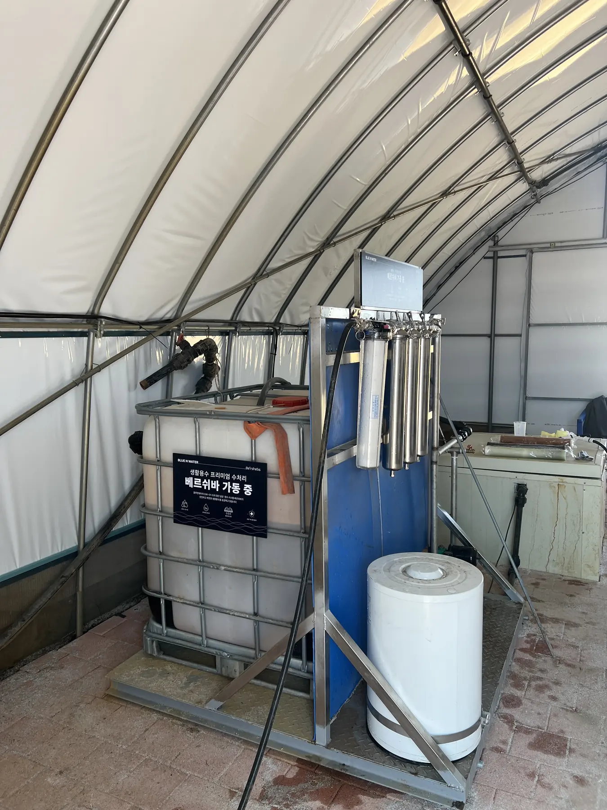
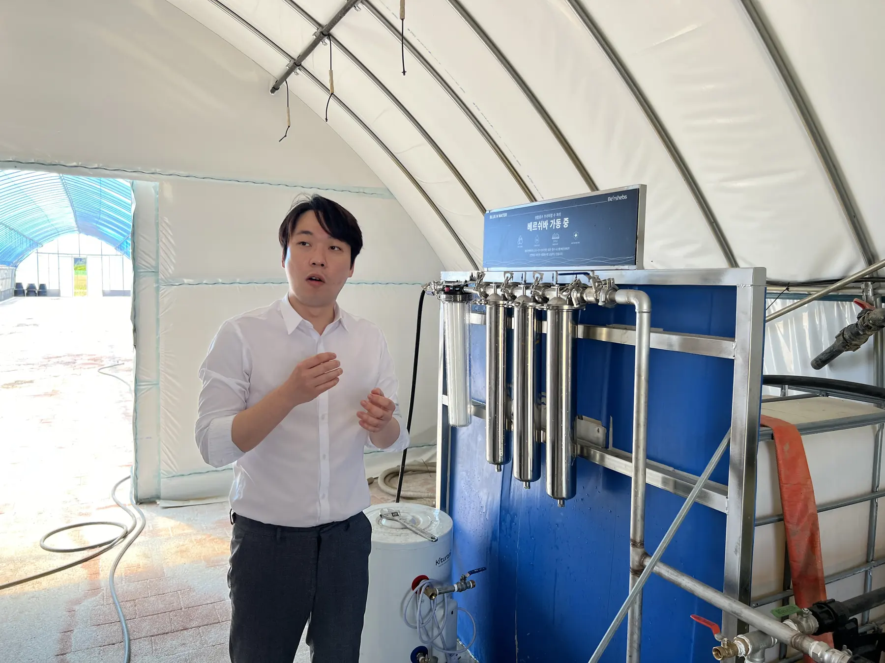
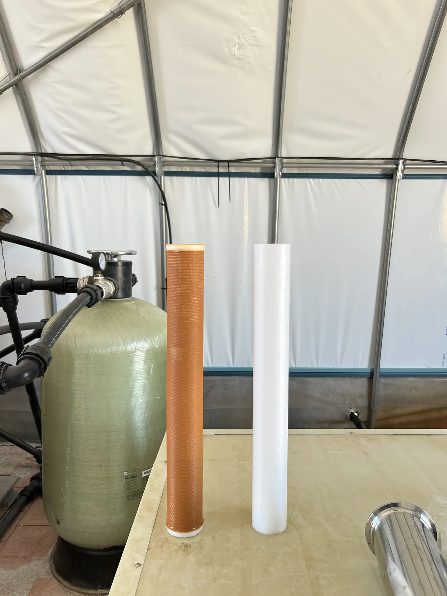
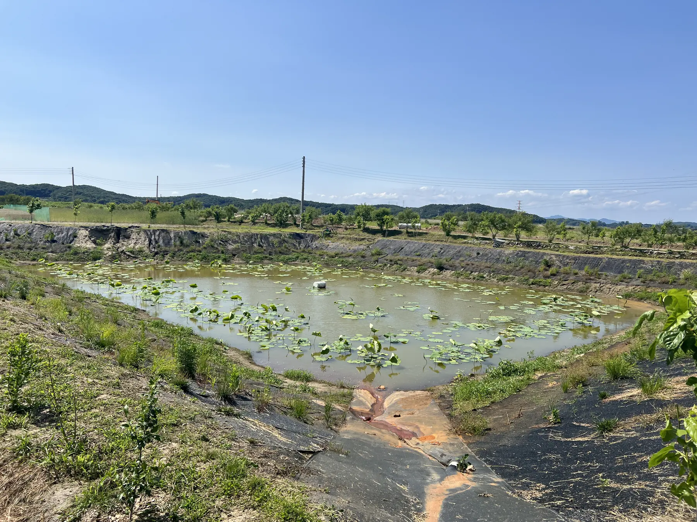
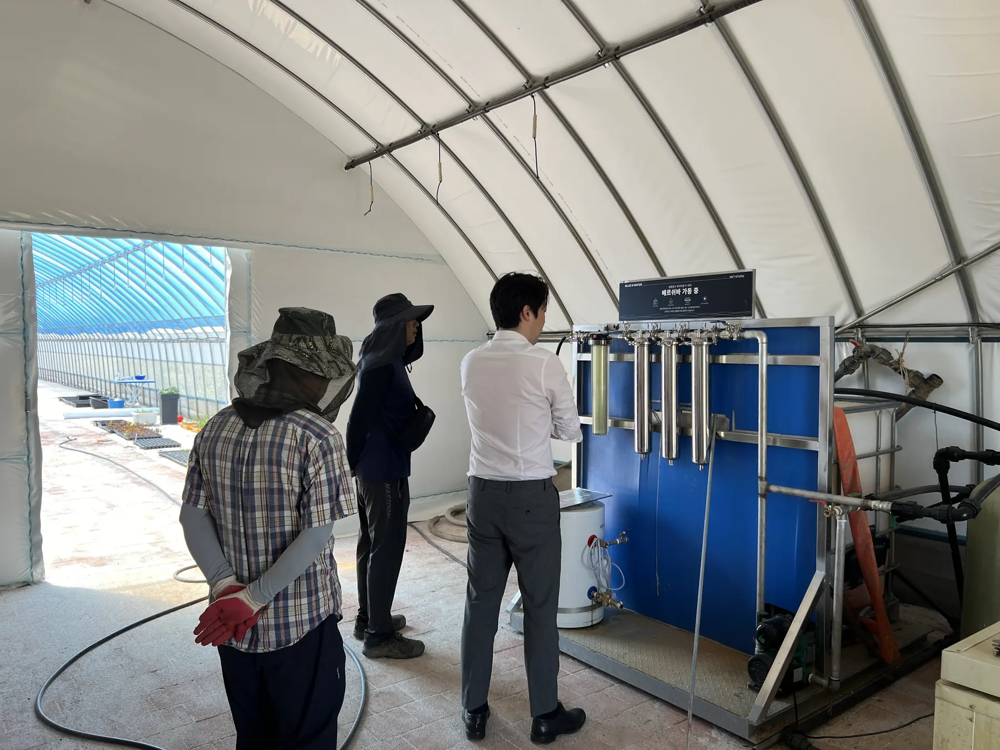
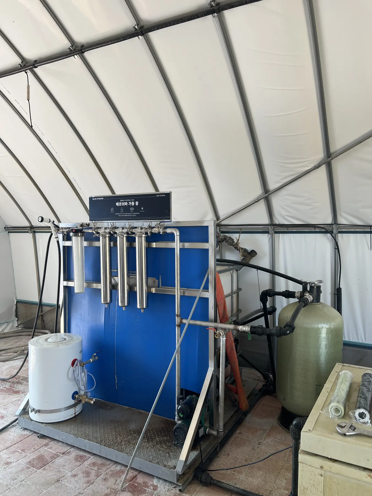
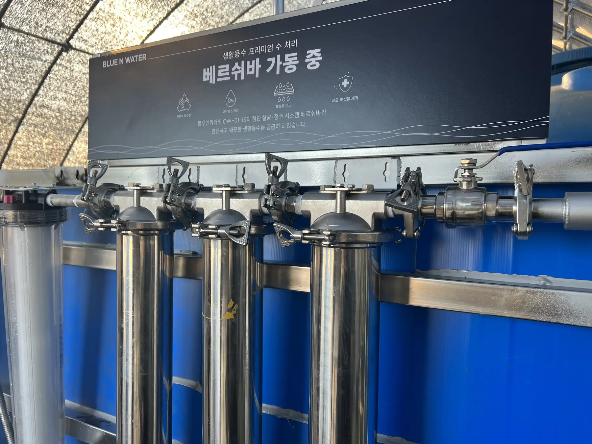
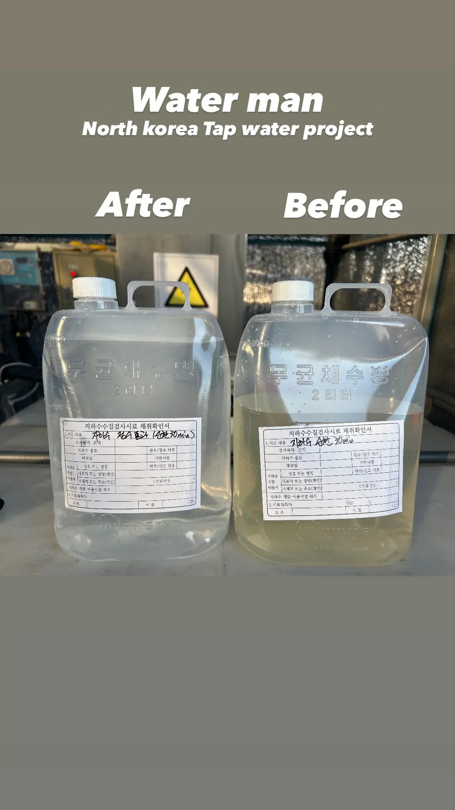
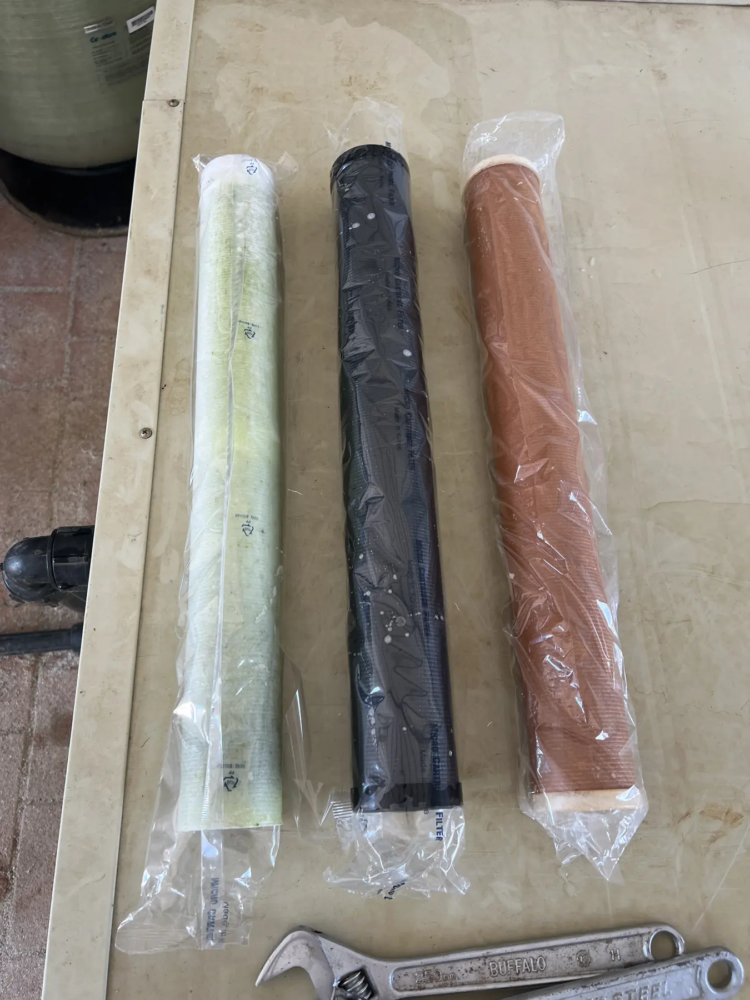
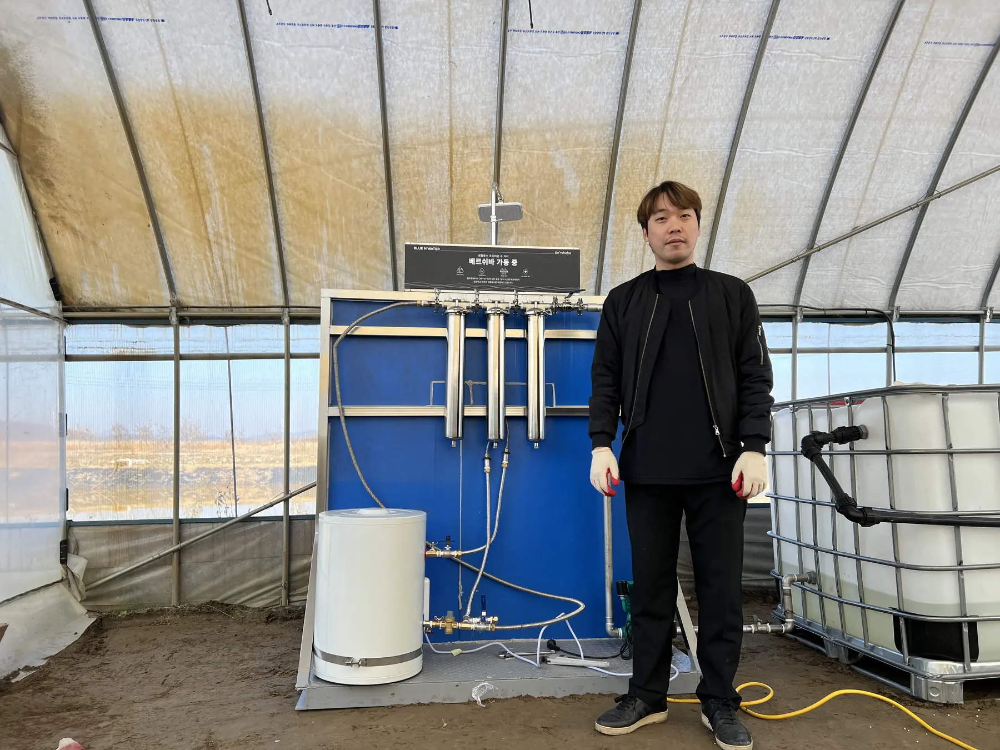

Agricultural Water
DMZ 파주 평화농장
농업용수·현장형 수처리 적용 레퍼런스
파주 DMZ 인근 농업 현장에 설치된 BLUE N WATER 수처리 설비와 여과·촉매 기반 처리 구조를 보여주는 프로젝트 사진 자료입니다.
DMZ 파주 평화농장농업용수·현장형 수처리 적용 레퍼런스
Project Overview
적용 포인트
- 농업용수 처리 현장성 확인
- 필터·촉매 기반 설비 구성 확인
- 소규모 분산형 수처리 적용 가능성 검토
BLUE N WATER
Field reference for usable water infrastructure.
파주 DMZ 인근 농업 현장에 설치된 BLUE N WATER 수처리 설비와 여과·촉매 기반 처리 구조를 보여주는 프로젝트 사진 자료입니다.
Field Gallery
DMZ 파주 평화농장 현장 이미지
프로젝트 폴더 내 제공 이미지를 웹 최적화하여 가능한 한 모두 반영했습니다.









